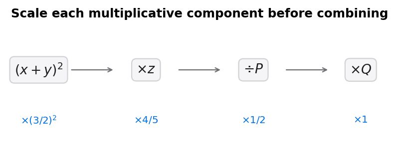

The equation connects the variables $M$, $x$, $y$, $z$, $P$ and $Q$.
$$M=\frac{(x+y)^2z}{P}Q$$
The following changes are made:
- $x$ and $y$ are both increased by 50%
- $z$ is decreased by 20%
- $P$ is doubled and $Q$ remains the same.
What is the resulting percentage change in $M$?
A 2.5% decrease B 2.5% increase C 10% decrease D 10% increase E 20% decrease F 20% increase
Status: lesson evidence; completed with prompting. Historical NSAA specimen, not a current ESAT paper.
[1 mark — official global instruction: each question is worth one mark]
The source-specific strategy is to keep the original expression intact and replace each changed quantity by a scale-factor version. The sum is the only potentially awkward component, so factor the common scale factor from $1.5x+1.5y$ before applying the square. Then multiply the four independent scale effects and translate the resulting multiplier into a percentage change.
The expression is a product of a squared bracket, $z$, a reciprocal factor $1/P$, and $Q$. Percentage changes therefore combine multiplicatively, but the two 50% increases cannot be treated as two unrelated multipliers because $x$ and $y$ are added before the square. Their common factor makes the entire bracket scale uniformly.
If a quantity changes from $T$ to $kT$, its multiplier is $k$. Here $x\mapsto\tfrac32x$, $y\mapsto\tfrac32y$, $z\mapsto\tfrac45z$, $P\mapsto2P$, and $Q\mapsto Q$. Division by the doubled $P$ contributes a factor $\tfrac12$, not $2$.
The evidenced common trap is beginning term-by-term and stalling; the tutor anchored substitution into the unchanged expression, factorisation, fraction use, cancellation, and careful division. That supports this diagnosis. It does not support claiming an unaided completion, so the status remains completed with prompting.
This first route reaches the same stopping result without carrying out the later numerical cancellation prose: the scale ledger predicts multiplier 0.9, hence option C, a 10% decrease. Transfer the ledger method by assigning one factor to each structural component before simplifying.
Factor first: $\tfrac32x+\tfrac32y=\tfrac32(x+y)$. Squaring gives $[\tfrac32(x+y)]^2=\tfrac94(x+y)^2$. The complete new-to-old ratio is therefore $$\frac{M_{\rm new}}{M_{\rm old}}=\frac94\times\frac45\times\frac12\times1.$$ Cancel the 4s to obtain $\tfrac95\times\tfrac12=\tfrac9{10}=0.9$. Thus the new value is 90% of the old value, so the change is $90\%-100\%=-10\%$: a $\boxed{10\%\text{ decrease}}$, option C.

The calculation succeeds because the common three-halves factor belongs to the entire sum before squaring. Read the ratio from the original structure: bracket factor squared, then the z factor, then the reciprocal P factor, with Q unchanged. The difficult hand-off is from 9/4 times 4/5 to 9/5, followed by division by 2, not multiplication by 2. The evidenced hesitation was at this substitution-and-cancellation point, so the diagnosis is bounded to that move rather than a broad percentage weakness. Check the result by testing simple positive values such as x=y=z=P=Q=1; direct old and new evaluations have ratio 0.9. Stop at option C. On a new proportional-change expression, preserve brackets and denominator positions in a ratio ledger before converting the final multiplier to a signed percentage.